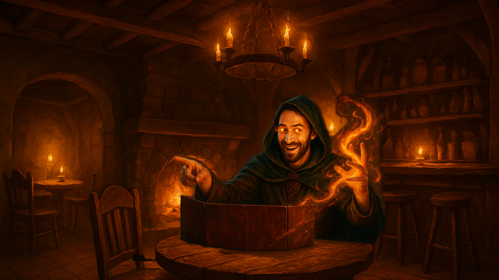

En unik blanding av teater, rollspel och äventyr baserat på Dungeons & Dragons 5th Edition (DND 5E). Perfekt för nybörjare och erfarna spelare som vill ha vardagsmagi och spänning.
DM är jag, Michel, som har över 9 års erfarenhet som spelledare med olika grupper jorden runt! Jag har spelat med alltifrån nybörjare till mer erfarna spelare.
Jag är master student i religionshistoria och religionsbeteendevetenskap med akademisk bakgrund i teater, religions antropologi, ockultism, magi och alkemi, och kombinerar min kunskap inom teater, ritual studier och berättande för att skapa atmosfäriska äventyr med mycket intriger och olika personligheter och röster.
Äventyren hålls främst på engelska men erbjuds även på svenska enligt önskemål.
Spelträffar sker i Malmö/Lund, hos er eller på offentlig plats. Resor inom Skåne eller Sverige möjligt enligt överenskommelse.
Alla! Passar för kalas, svensexor, möhippor, fester eller kvällsaktiviteter. Perfekt för både nybörjare och erfarna spelare. Från 12+ och uppåt!
Allt från Vampyrer, zombies, demonhorder till politiska dramer eller mystiska magiker. Äventyren skräddarsys efter gruppens önskemål eller välj ett färdigskrivet äventyr. Alla äventyr är skrivna av mig personligen!
Välj mellan en av 3 kortare färdiga äventyr (4-5 timmar):
Välj mellan en av 2 längre färdiga äventyr (6-7 timmar):
TBD
Kortare oneshots: 3-5 timmar: 300kr per person upp till 4 spelare. 5-6 spelare tillkommer en avgift på 100kr per extra spelare.
Längre oneshots: 5-7 timmar (endast helgdagar): 400kr per person upp till 4 spelare: 5-6 spelare tillkommer en extra avgift på 150kr per spelare.
Återkommande träffar: Prissättning enligt överenskommelse beroende på intervaller och tidsperspektiv.
Anpassade äventyr: Beroende på omfattning och önskemål baseras priset efter överenskommelse.
Det finns tre regelverk att välja mellan:
Enkel - ett förenklat spel som kräver väldigt lite eftertanke. Baserat på ett eget utvecklat ramverk som ”streamlinear” spelet genom att ta bort mycket av räkenskapen och tillåter snabbare och enklare rörelser. Rekommenderas för nybörjare och människor som vill testa på spelet och ha kul utan för mycket eftertanke.
Avancerat - Helt baserat på DND 5E ramverk för hur man rullar tärning, rör sig på kartan och slåss. Förutsätter tidigare kunskap och är spelarnas ansvar att vara informerade på reglerna.
Hybrid / Medel - En blandning mellan enkel och avancerat. Använder det enklare ramverket fast med fler element av räkenskap och positionering på slagfältet. Här rekommenderas det att man är påläst på grunderna, eventuellt att man är beredd att lyssna noggrant på instruktioner till början. Det är fortfarande spelarnas ansvar att förstå spelet tillräckligt för att det ska finnas ett jämnt flöde under spelet. DM (dungeon master) avsäger sig ansvarsrätten för eventuell missförstånd och frustration som kan uppstå mellan spelarna om alla inte är på ”samma bana”.
Efter att vi samlats vid uttalad tid så sätter vi igång med en kort introduktion; vi delar ut tärningar och ”character sheets” (vem ni är, hur ni ser ut, era personligheter och förmågor), går igenom eventuella frågor och förbereder oss för världen. (Ca 15 min).
Vi börjar sedan att spela och tar frågor som de kommer.
Efter ca 1.5h - 2h så tar vi en 30 minuter pause (längre om så önskas) för att ta lite luft, gå på toa och eventuellt äta/dricka något.
Efter pausen sätter vi igång igen och jobbar mot mållinjen, slåss för våra liv och förhoppningsvis klarar av utmaningen!
Vi avslutar sedan med en kort reflektion, hur ni upplevde spelet och eventuella anmärkningar och tankar.
Varför är tidsspannet mellan 4-5 timmar och 6-7 timmar?
Beroende på hur ni spelar (och samspelar) så kan ni eventuellt bli klara snabbare eller långsammare. Tänk er lite som ett escape room; beroende på hur ni väljer att ta er igenom spelet så kommer det att ta varierande tid. Oavsett hur ni gör kommer ni att spela den utsatta tiden.
Förberedelser på plats inför träffen?
Vilken bra fråga att ställa, tack! Innan vi börjar spela rekommenderas det att ni vart på toa, ätit något och eventuellt förberett snacks och annat som ni önskar. Här ser vi även till att ha sms och ringt nära och kära och berättat att ni kommer att vara upptagna framöver, och sedan satt era telefoner på ljudlöst. Tänk er detta lite som ett biobesök: man vill inte missa filmen!
Du nämner telefoner, får man använda telefoner under träffen?
Lika bra fråga som innan! Svaret är nej. Inga telefoner tillåts under träffen utöver överenskommelse (såsom att ni måste hålla koll pga barn eller situationer. Detta är ett interaktiv landskap och är beroende av fokus och närvaro. Spelet blir som bäst när man verkligen kliver in i sina rollen och fokuserar till fullo på världen! Telefoner ”breaks immersion” för både er och mig vilket skapar ett tråkigare spel.
Ifall vi vill förbereda oss inför spelet, som T. ex. sätta oss in i karaktärer/regler, finns det något vi kan göra då?
Absolut! Vill ni sätta er in i spelet och mekanismerna så får ni tillgång till era karaktärer, dom spelreglerna ni har valt och bra saker att tänka på.
Måste man ”rollspela”?
Svaret är nej. Man måste inte rollspela per se, utan det finns två sätt att spela spelet:
a) Antingen utgår man ifrån tredje person och berättar vad ens karaktär gör och så händer det, eller
b) så spelar man sin karaktär och utforskar möjligheterna som finns däri.
Jag rekommenderar alltid att försöka rollspela än inte. Det blir roligare för er och för gruppen. Om du tror att du inte ”kan” så kan jag motbevisa dig snabbt! Man måste bara våga.
Behöver vi ta med något för att spela?
Nej! Allt finns på plats, det är bara att dyka upp och dyka in!
Oj, 4-5 timmar? 6-7 timmar? Det känns ju jätte långt?!
Det kanske låter mycket, men när man suttit på helspänn i 2.5 timmar märker man inte ens att tiden har gått! Jag kan inte minnas ett enda speltillfälle där vi plötsligt måste sluta spela för att det redan gått 4h+ :)
Varför hålls spelen främst på engelska?
Toppen fråga: Efter många resor jorden runt och att mina studier främst är på engelska har jag vant mig vid att prata engelska, och främst skapa mina röster och dialekter baserat på det. Svenska går precis lika bra!
Varför är åldersgränsen satt från 12+?
Mindre barn har en tendens att inte kunna följa med spelet och tänka utifrån givna ramar och strategiskt planera sina handlingar. Detta skapar ojämna spel som lätt leder till frustration för andra spelare som gärna vill leva sig in.
Kontant eller Swish! Deposition på hela summan förekommer vid boknings tillfälle.
Alla avbokningar måste ske med minst 72h notis, annars debiteras hela beloppet enligt överenskommelse.
Mot förmodan att jag får förhinder kommer jag att återkomma med detta omgående och hela beloppet återbetalas.
Ni når mig enklast på mail: michels.rp.adventure@gmail.com, eventuellt via Facebook eller Instagram.
Jag siktar på att alltid återkomma inom 24h!